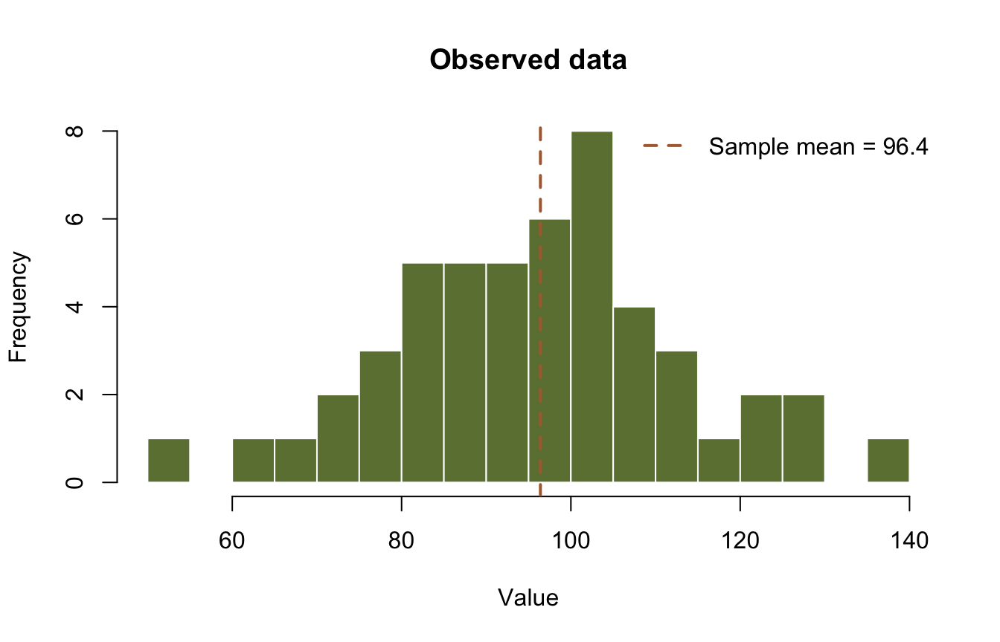
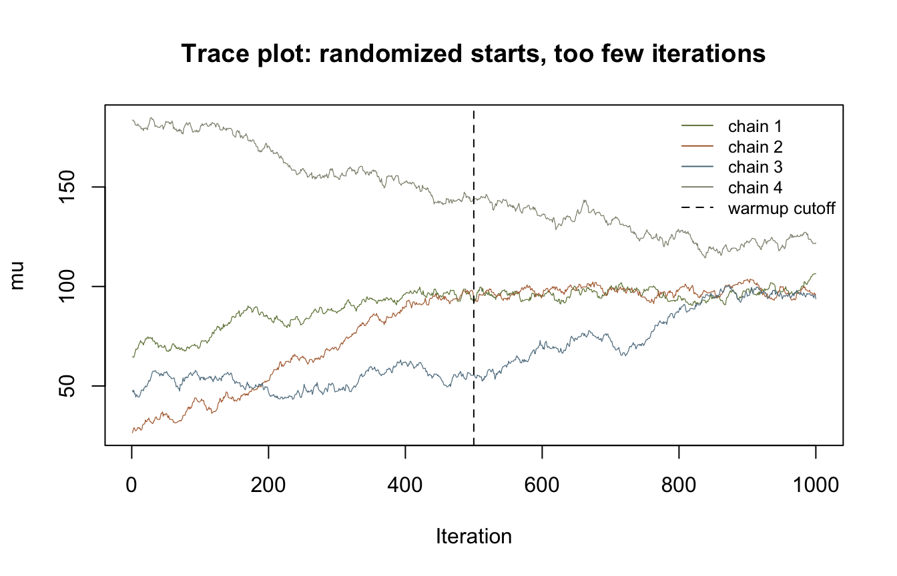
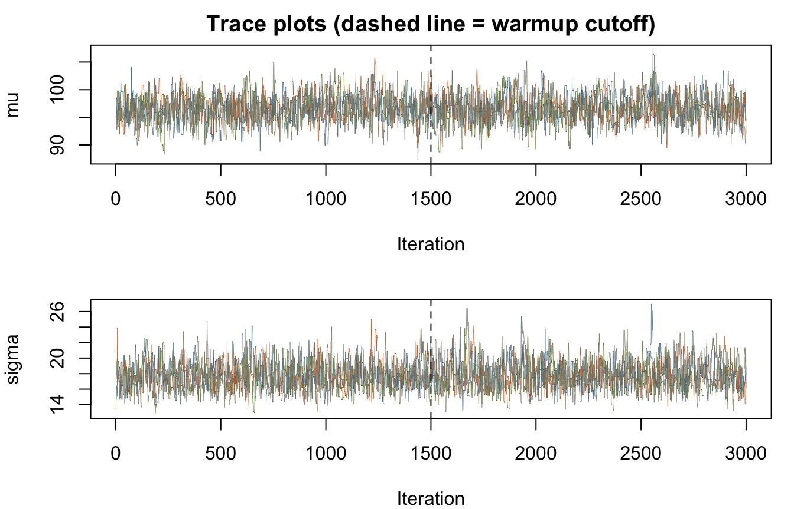
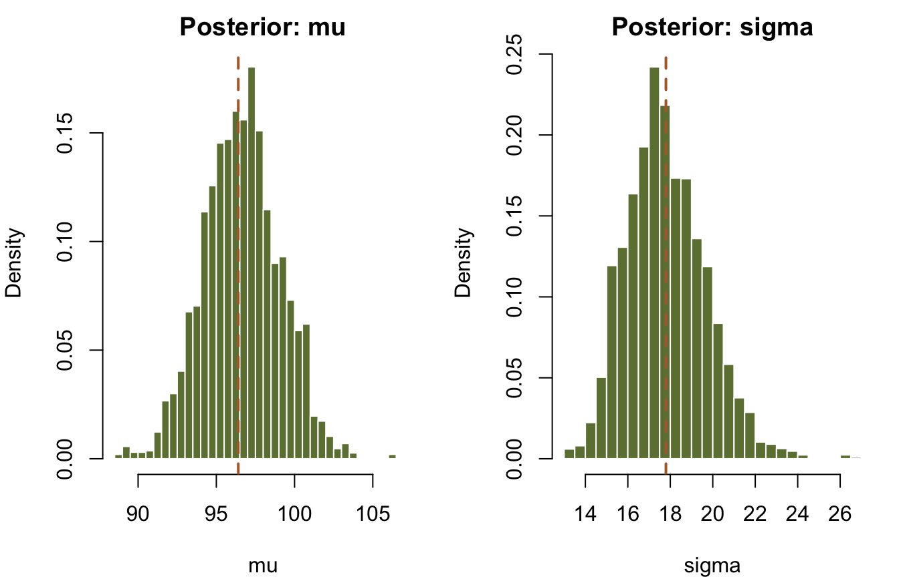
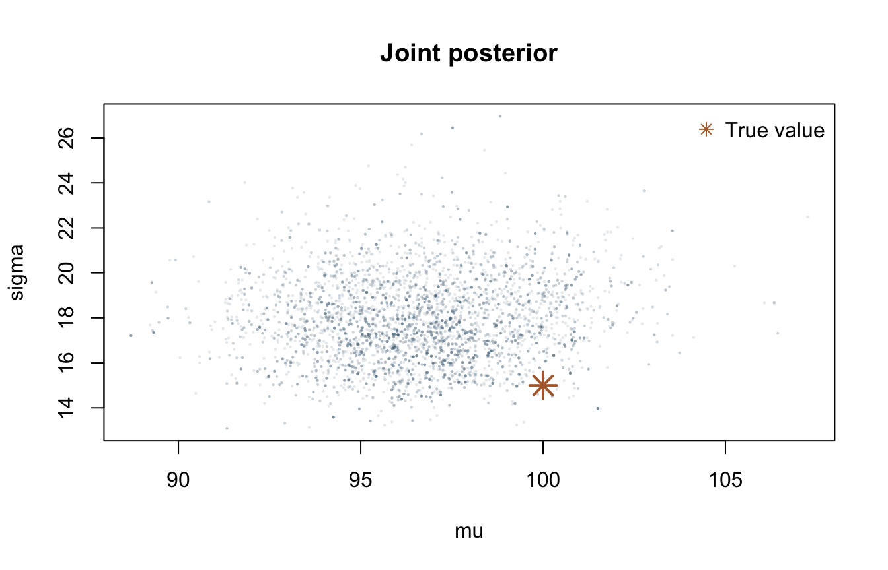
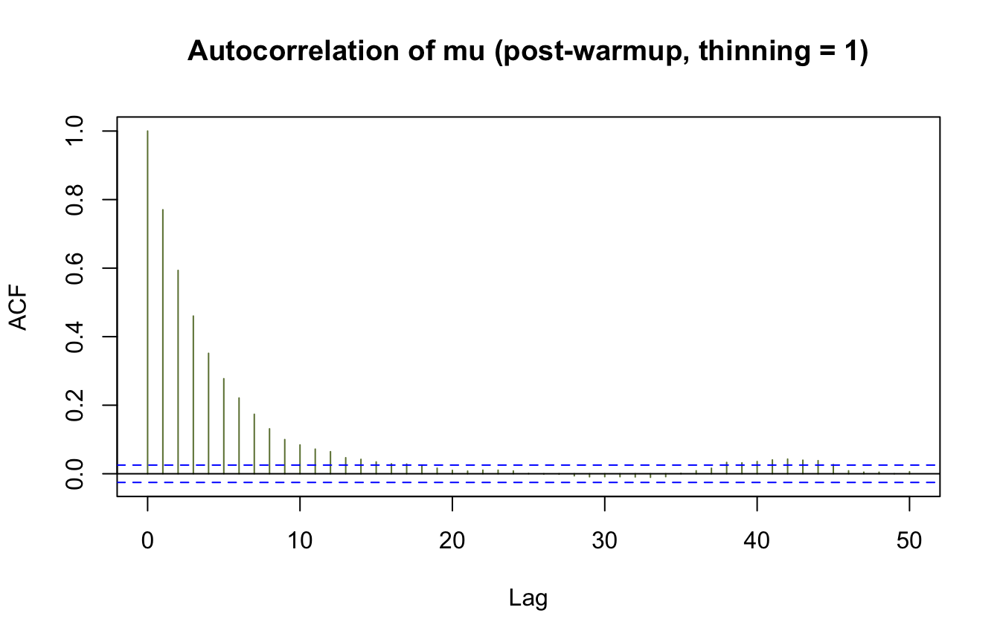

library(corehydror)
# Earth-tone palette used throughout, one color per chain
pal <- c("#6b7f3f", "#b06a3b", "#5b7a8c", "#8c8c7a")03. MCMC basics
Ported from 03_mcmc_basics.ipynb in the USACE-RMC Numerics-Python-Examples repository (0BSD licensed). The upstream notebook drives the C# Numerics.dll through pythonnet; this version uses corehydror, whose compiled core is a validated C++ port of the same library. The seeded data draws below reproduce the upstream values exactly. The posterior numbers are close to the upstream’s but deliberately not identical, because this port builds its priors differently (explained below). The Python version of this example uses the same core and prints the same numbers.
One honest caveat up front: the upstream’s first example estimates the mean alone, with the standard deviation fixed at 15 and a hand-picked Uniform(50, 150) prior passed through a custom log-likelihood delegate. mcmc_sample() always fits every parameter of a family under uniform priors derived from the family’s parameter constraints, so that fixed-sigma example is not expressible with the public API. This port teaches the same concepts on the upstream’s second example, where both the mean and the standard deviation are unknown.
What you’ll learn
- What MCMC is and when to use it.
- How the Random Walk Metropolis-Hastings (RWMH) sampler works.
- How to read a trace plot and spot a run that has not converged.
- What warmup (burn-in) and thinning do.
- How to summarize a posterior and check acceptance rates and R-hat.
What is MCMC
Markov Chain Monte Carlo draws samples from a posterior distribution that is known only up to a normalizing constant. By Bayes’ theorem, the posterior is proportional to the product of the prior and the likelihood:
\[ \pi(\theta \mid y) \propto \pi(\theta) \cdot L(y \mid \theta) \]
It is common to work with the logarithm of this product, which is how the library works internally:
\[ \log \pi(\theta \mid y) = \log \pi(\theta) + \log L(y \mid \theta) + \text{const} \]
MCMC is useful when:
- You want to quantify uncertainty in parameters, not just point estimates.
- You have prior knowledge to incorporate.
- You need full posterior distributions.
- Standard optimization methods are insufficient.
The library ports all of the upstream samplers; mcmc_sample() accepts any of them by name:
| Sampler | Full name | Best for |
|---|---|---|
| RWMH | Random Walk Metropolis-Hastings | General purpose, small dimensions |
| ARWMH | Adaptive RWMH | Medium dimensions (2-20) |
| DEMCz | Differential Evolution MCMC | High dimensions, multimodal |
| DEMCzs | DE-MCMC with snooker update | Very high dimensions |
| HMC | Hamiltonian Monte Carlo | Smooth posteriors |
| NUTS | No-U-Turn Sampler | General smooth posteriors |
| SNIS | Self-normalized importance sampling | Cheap approximate posteriors |
This example uses RWMH, the simplest and most robust baseline. At each iteration it proposes a new state from a symmetric normal distribution centered at the current state, \(\theta^* \sim \mathcal{N}(\theta, \Sigma)\), and accepts it with probability
\[ \alpha = \min\left(1, \frac{\pi(\theta^*)}{\pi(\theta)}\right), \]
computed in log space as \(\log \alpha = \log \pi(\theta^*) - \log \pi(\theta)\). Proposals that fall outside the prior bounds are rejected without evaluating the likelihood. Theory gives target acceptance rates for RWMH of about 44% for one parameter, falling toward 23.4% in high dimensions (Roberts, Gelman, and Gilks, 1997); we will check ours against that below.
Setup
The upstream setup loads the CoreCLR runtime, resolves the DLL, and builds .NET List and Array objects. None of that exists here; plain numeric vectors work everywhere.
Step 1: Generate synthetic data
We draw 50 observations from a Normal(100, 15) with seed 42, exactly the upstream’s Normal(100, 15).GenerateRandomValues(50, 42). The port keeps the C# Mersenne Twister bit-exact, so these are the same 50 numbers the upstream notebook sees: the sample mean prints 96.40 and the population standard deviation prints 17.13, matching the upstream output digit for digit.
true_mu <- 100
true_sigma <- 15
data <- dist_random(distribution("Normal", c(true_mu, true_sigma)), 50, seed = 42)
pop_sd <- sqrt(mean((data - mean(data))^2))
cat("Generated", length(data), "observations\n")Generated 50 observationscat(sprintf("Sample mean: %.2f\n", mean(data)))Sample mean: 96.40cat(sprintf("Sample std: %.2f\n", pop_sd))Sample std: 17.13hist(data, breaks = 15, col = "#6b7f3f", border = "white",
main = "Observed data", xlab = "Value")
abline(v = mean(data), col = "#b06a3b", lty = 2, lwd = 2)
legend("topright", legend = sprintf("Sample mean = %.1f", mean(data)),
col = "#b06a3b", lty = 2, lwd = 2, bty = "n")
Step 2: Priors and likelihood
The upstream builds a .NET List of prior distributions (Uniform(50, 150) for the mean, Uniform(1, 50) for the standard deviation) and wraps a Python function as a LogLikelihood delegate. Here mcmc_sample() assembles both pieces for you: the log-likelihood is the family’s own, evaluated in the compiled core, and the priors are uniforms spanning the family’s parameter constraints (the C# GetParameterConstraints bounds, which scale with the data). For this sample they work out to mu ~ Uniform(-1000, 1000) and sigma ~ Uniform(~0, 1000). Both prior sets are effectively flat over the region where the likelihood has any mass, so the posteriors come out nearly the same, but the numbers cannot match the upstream’s bit for bit.
Step 3: A first run, badly initialized
By default the sampler runs 4 chains initialized at the maximum a posteriori (MAP) estimate. To see why convergence checking matters, we first do the opposite: initialize each chain at a random draw from the (very wide) priors and run only 1,000 iterations.
A trace plot shows a parameter’s sampled value at each recorded iteration, one line per chain. A healthy, well-mixed chain looks like a fluffy caterpillar: random scribble centered on the posterior mean, with no visible trends and all chains overlapping. Chains that drift, or that disagree with each other, have not converged.
bad <- mcmc_sample(data, "Normal", sampler = "RWMH",
iterations = 1000, warmup = 500, thinning = 1,
seed = 12345, initialize = "Randomize")
bad_mu <- sapply(bad$chains, \(chain) chain[, 1])
matplot(bad_mu, type = "l", lty = 1, lwd = 0.6, col = pal,
xlab = "Iteration", ylab = "mu",
main = "Trace plot: randomized starts, too few iterations")
abline(v = 500, col = "black", lty = 2)
legend("topright", legend = c(paste("chain", 1:4), "warmup cutoff"),
col = c(pal, "black"), lty = c(1, 1, 1, 1, 2), lwd = 1, bty = "n", cex = 0.8)
cat("R-hat:", round(bad$rhat, 3), "\n")R-hat: 2.641 1.976 The chains start scattered across the prior and spend most of the run wandering toward the posterior. The Gelman-Rubin statistic (R-hat) compares within-chain and between-chain variance and should be very close to 1 at convergence; values well above 1, like these, flag a run whose chains are still exploring. The fix is cheap: better initialization and more iterations.
Step 4: A proper run
Now the default MAP initialization and 3,000 iterations per chain, with the first 1,500 treated as warmup. The chains in the result include the warmup segment, which is what makes plots like this possible; R-hat is computed from the post-warmup portion only.
fit <- mcmc_sample(data, "Normal", sampler = "RWMH",
iterations = 3000, warmup = 1500, thinning = 1, seed = 12345)
warmup <- 1500
op <- par(mfrow = c(2, 1), mar = c(4, 4, 2, 1))
for (p in 1:2) {
traces <- sapply(fit$chains, \(chain) chain[, p])
matplot(traces, type = "l", lty = 1, lwd = 0.4, col = pal,
xlab = "Iteration", ylab = c("mu", "sigma")[p],
main = if (p == 1) "Trace plots (dashed line = warmup cutoff)" else "")
abline(v = warmup, col = "black", lty = 2)
}
par(op)
cat("R-hat:", round(fit$rhat, 3), "\n")R-hat: 1.005 1.003 Both parameters now show the fluffy caterpillar: four overlapping chains, no trends, and R-hat within a hair of 1.
Step 5: Posterior summaries
The result carries per-parameter posterior summaries. Following the C# design, these are computed from a dedicated posterior sample of about 10,000 draws that the sampler records after the main iterations, so they do not depend on exactly where you cut the warmup. The credible interval is the central 90% (5th to 95th percentile). Recall the true values are mu = 100 and sigma = 15, and the data summaries are 96.40 and 17.31 (sample standard deviation).
summary_df <- data.frame(
parameter = fit$parameters,
true = c(true_mu, true_sigma),
map = fit$map,
post_mean = fit$posterior_mean,
post_sd = fit$posterior_sd,
median = fit$posterior_median,
pct_5 = fit$posterior_lower_ci,
pct_95 = fit$posterior_upper_ci,
rhat = fit$rhat,
ess = fit$ess
)
summary_df[-1] <- round(summary_df[-1], 4)
print(summary_df, row.names = FALSE) parameter true map post_mean post_sd median pct_5 pct_95 rhat
µ 100 96.3987 96.4027 2.4468 96.4842 92.3519 100.2315 1.0052
σ 15 17.1323 17.7938 1.8559 17.6358 15.0499 21.1403 1.0031
ess
1482.406
1065.802cat("\nAcceptance rates by chain:", round(fit$acceptance_rates, 3), "\n")
Acceptance rates by chain: 0.441 0.43 0.441 0.435 The posterior mean of mu sits on the sample mean, and the 90% credible interval comfortably covers the true value of 100. The posterior for sigma centers near the sample standard deviation of 17.3 rather than the true 15: with 50 observations this particular seed simply drew a wide sample, and the upstream notebook sees the identical effect with its own priors (its sigma interval is [15.02, 21.02]; ours is [15.05, 21.14]). The data, not the method, set that limit.
The acceptance rates land right around 0.44. For a two-parameter RWMH that is squarely in the healthy range between the one-dimensional optimum (44%) and the high-dimensional limit (23.4%). Very low rates mean the proposals are too aggressive and almost always rejected; very high rates mean timid proposals and slow exploration.
The marginal posteriors and the joint posterior, from the pooled post-warmup draws:
post <- do.call(rbind, lapply(fit$chains, \(chain) chain[-seq_len(warmup), ]))
op <- par(mfrow = c(1, 2), mar = c(4, 4, 2, 1))
for (p in 1:2) {
hist(post[, p], breaks = 40, freq = FALSE, col = "#6b7f3f", border = "white",
main = paste("Posterior:", c("mu", "sigma")[p]),
xlab = c("mu", "sigma")[p])
abline(v = fit$posterior_mean[p], col = "#b06a3b", lty = 2, lwd = 2)
}
par(op)
plot(post[, 1], post[, 2], pch = 16, cex = 0.3,
col = adjustcolor("#5b7a8c", alpha.f = 0.15),
xlab = "mu", ylab = "sigma", main = "Joint posterior")
points(true_mu, true_sigma, pch = 8, cex = 2, lwd = 2, col = "#b06a3b")
legend("topright", legend = "True value", pch = 8, col = "#b06a3b", bty = "n")
Understanding warmup and thinning
Warmup (burn-in). The first stretch of every chain is influenced by its arbitrary starting point, as the randomized run above made obvious. Those samples are misleading and should be discarded. Rules of thumb from the upstream notebook: RWMH wants 2,000-5,000 warmup iterations on hard problems, gradient samplers (HMC/NUTS) closer to 1,000-2,000, and warmup of about half the iterations is a reasonable default. This port enforces the C# constraint that warmup cannot exceed half the iterations. Note the division of labor in the results: chains keeps the warmup segment so you can plot it, R-hat drops it, and the posterior summaries come from the separate post-run sample described above.
Thinning. Successive MCMC samples are autocorrelated. Thinning records only every nth state: each row of a chain is the state after thinning internal steps, and the default interval in this library is 20, matching C#. We set thinning = 1 in this example precisely so the raw autocorrelation is visible below. Thinning reduces autocorrelation in what you store, but it does not add information; running longer is always at least as good. Keep the interval at or below the autocorrelation length.
acf(post[, 1], lag.max = 50, main = "Autocorrelation of mu (post-warmup, thinning = 1)",
col = "#6b7f3f")
The autocorrelation decays within a few dozen lags, which is typical of a healthy random-walk sampler. The effective sample size in the summary table (about 1,500 for mu out of 10,000 posterior draws) tells the same story: RWMH explores by diffusion, so its draws are far from independent, and gradient samplers would score much higher here.
Summary
In this notebook you:
- Built a Bayesian model for Normal data with unknown mean and standard deviation.
- Ran RWMH through
mcmc_sample(), which supplies constraint-based uniform priors and the family’s own log-likelihood. - Diagnosed a bad run and a good one with trace plots and R-hat.
- Read posterior summaries, credible intervals, acceptance rates, and ESS.
Key takeaway: MCMC gives full uncertainty quantification for parameters, not only point estimates.
Reproduction check
The seeded data draw is bit-exact against the upstream C# stream. The posterior cannot be compared bit for bit: the upstream uses hand-picked Uniform(50, 150) and Uniform(1, 50) priors through a custom likelihood delegate, while mcmc_sample() uses the family’s constraint-based uniform priors, so the samplers consume different random streams. Those rows are checked statistically. The final rows assert cross-language identity: the Python twin asserts the very same literals, because both packages run the same compiled core with the same seed.
| Quantity | Upstream C# | This port | Status |
|---|---|---|---|
Seeded sample mean, GenerateRandomValues(50, 42) |
96.40 | 96.40 | exact |
| Seeded sample std (population) | 17.13 | 17.13 | exact |
| Posterior mean of mu | 96.427 | 96.403 | statistical (priors differ) |
| 90% CI for mu covers true mu = 100 | [92.22, 100.54] | [92.35, 100.23] | statistical |
| 90% CI for sigma covers sample sd 17.31 | [15.02, 21.02] | [15.05, 21.14] | statistical |
| RWMH acceptance rate near 0.44 | 0.43 | 0.43-0.44 | statistical |
| First seeded data value | n/a | 95.20221411105254 | exact (R == Python) |
| Posterior means (mu, sigma) | n/a | shared literals | exact (R == Python) |
The chunk below fails the render if any check drifts.
# Upstream: 03_mcmc_basics.ipynb, cell 5 output (seeded data),
# cell 19 output (two-parameter posterior table), cell 21 output (acceptance rate).
# Exact tier: the seeded data draw reproduces the C# Mersenne Twister stream.
stopifnot(
round(mean(data), 2) == 96.40,
round(pop_sd, 2) == 17.13
)
# Statistical tier: constraint-based priors differ from the upstream's hand-picked
# ones, so we assert the inference, not the draws.
stopifnot(
abs(fit$posterior_mean[1] - mean(data)) < 1.0,
fit$posterior_lower_ci[1] <= true_mu, true_mu <= fit$posterior_upper_ci[1],
fit$posterior_lower_ci[2] <= sd(data), sd(data) <= fit$posterior_upper_ci[2],
all(fit$rhat < 1.05),
all(fit$acceptance_rates > 0.2 & fit$acceptance_rates < 0.6),
max(bad$rhat) > 1.5 # the badly initialized run is flagged
)
# Exact tier, cross-language: the Python twin asserts these same literals. The
# values are bit-exact across R, Python, and the C# library; the comparisons carry
# a 1e-15 relative tolerance only because R's decimal parser can land one ulp away
# from the written literal.
stopifnot(
abs(data[1] / 95.20221411105254 - 1) < 1e-15,
abs(fit$posterior_mean[1] / 96.40267301325859 - 1) < 1e-15,
abs(fit$posterior_mean[2] / 17.793754146622998 - 1) < 1e-15,
abs(fit$acceptance_rates[1] / 0.4410909090909091 - 1) < 1e-15
)
cat("All reproduction checks passed.\n")All reproduction checks passed.